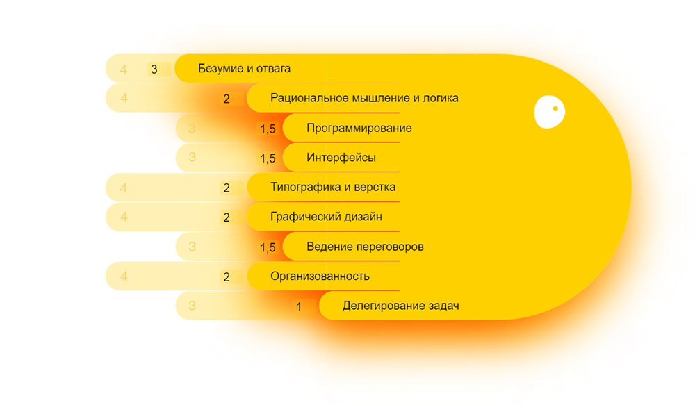

| gazzzolina.github.io | gra4_9317@mail.ru |
Осьминожка – это наглядная графическая репрезентация степени развитости навыков. В свою осьминожку я заложила 9 навыков, которые напрямую влияют на мой профессиональный рост как веб-разработчика. Я выделила специальные навыки — например, программирование и типографику, а так же общечеловеческие, такие как умение вести переговоры или делигировать задачи.
Длина ножек изменяется от 0 до 5. Чем выше балл, тем больше развит навык. Для обозначения актуального уровня конкретного навыка я использовала вот этот цвет - , для обозначения планируемого роста на ближайший год вот такой - .
Поддерживать мотивацию и интерес. Пройти стажировку в JetRockets и получить удовольствие, посещать TverIO митапы и конференции, обзавестись единомышленниками.
Решать логические задачи, ознакомиться с канонами дискретной математики (может быть!), избавиться от ошибок мышления в повседневной жизни.
Овладеть необходимыми навыками HTML, CSS, JS и того, что может ещё понадобиться. Научиться воспринимать язык программирования как структурный инструмент, а не набор словариков.
Развить чувство стиля, набить руку, натренировать глаз. Behance и прочие коммьюнити в помощь!
Читать Чихольда, Баттерика, Мюллера-Брокмана, Ководство и тех, о ком ещё предстоит узнать. Следить за вещами в духе https://bureau.ru
И вновь читать! А так же смотреть во все глаза и набивать руку. Утеплить отношения с Photoshop и Illustrator, освоить Scetch.
Изучить Кемпа и продолжить авторами, о которых я пока не знаю. Учиться презентовать себя, материал, красиво и оформленно излагать мысли, выработать новую систему мышления.
Привыкнуть и оптимально использовать возможности нового графика работы. Сделать работу приятной и лишенной жестких временных рамок частью жизни.
Обрести команду, уметь контактировать, слушать, отстаивать, предлагать. Адекватно и трезво оценивать свои возможности.